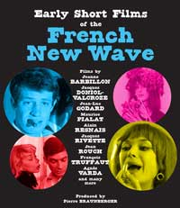

various
various
various minutes
Well, it's time for you to watch nineteen short French New Wave films in a row. Depending on where you are in the process, this will either serve as a short introduction to a lot of new directors and their style, or it will be a refresher course on what you love about them.
If you haven't already formed your own opinions on Resnais, Godard, Rivette, Truffaut, Varda, and friends, then try to pay a little extra attention in particular when those names come up. Then later when you've watched more of their longer works, come back and revisit some of these shorts and see if you can recognize the bite size versions that lay within the full features.
One of your favorites of these, to your surprise, is going to be All the Memory in the World, Alain Resnais' documentary about the National Library of France. It is beautiful and over the top, almost a self-parody of his style, with philosophical musings on the library's contents while featuring sweeping gorgeous views of the architecture and endless stacks of books. Your librarian wife would have gotten a kick out of this for all its grandeur and slight ridiculousness and pomposity, and you're a bit sad you missed your chance to share it with her.
Many of these shorts will be very funny, and for better or worse they will meander and twist less than their lengthier cousins. Some directors' styles are more recognizable than others in a short format. It's a form with limitations, and it's interesting to see how they approach it. Some sharpen up their styles to tell a full normal story in a digestible amount of time. For others the journey is still more important than the destination, and it's more important to find a small "unambitious" story that can be told with style in the allotted amount of time. As with real life, a viewer's attention is a finite resource. You don't always have unlimited amounts of time and effort to work with. So it's best to be true to yourself while respecting other people's limits.
Time to choose something different: